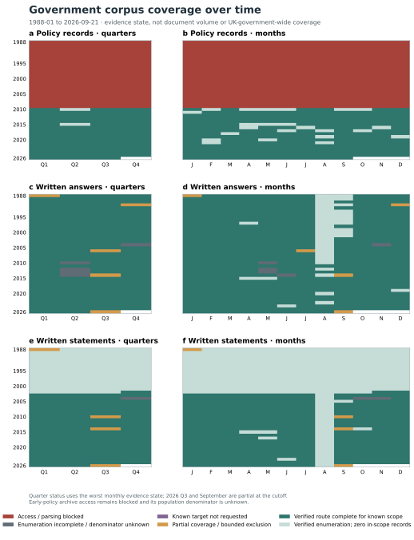
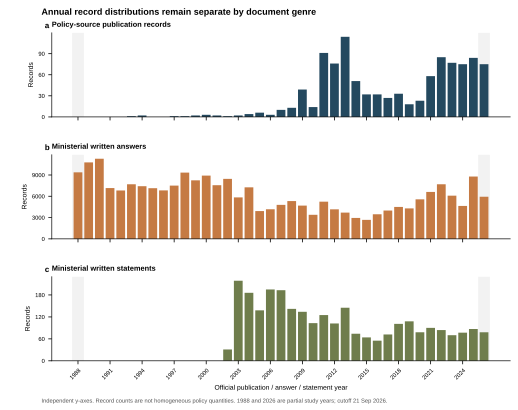
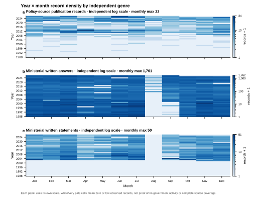
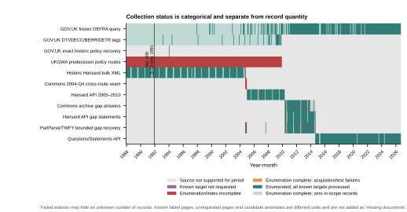
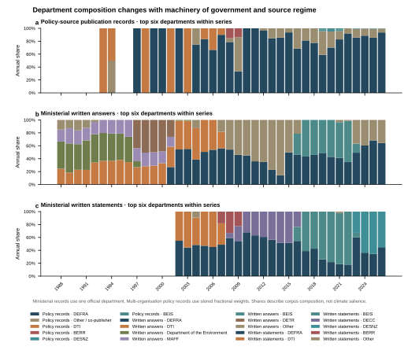

Historical coverage recovery
Policy records1,055
Written answers244,229
Written statements2,751
Text segments3,668,275
Coverage states are evidence states, not document volume or UK-government-wide coverage percentages. Unknown and blocked periods are not plotted as zero.
Government corpus coverage over time

Refreshed distribution



